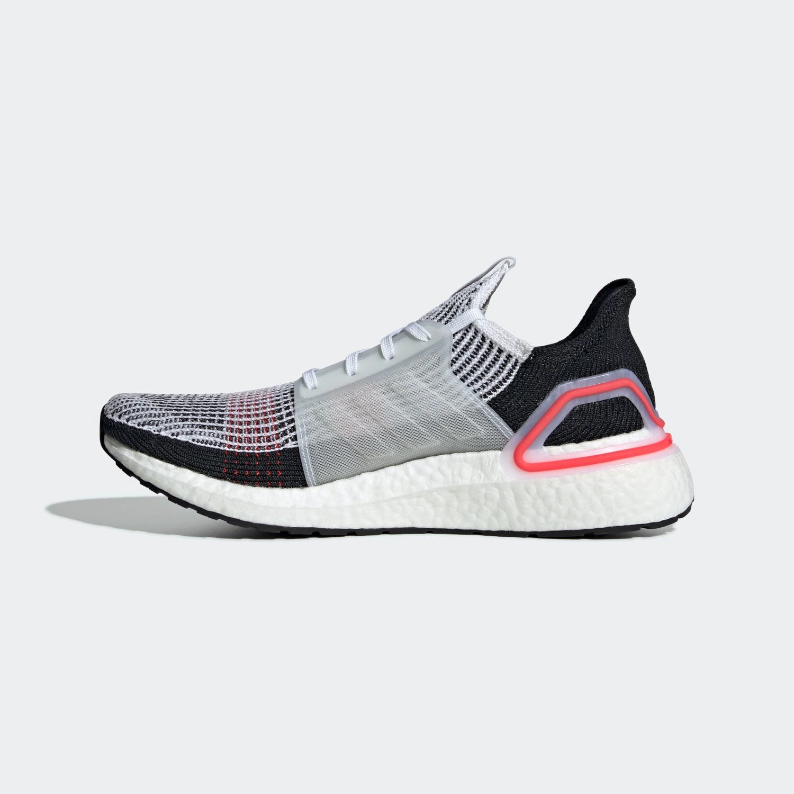
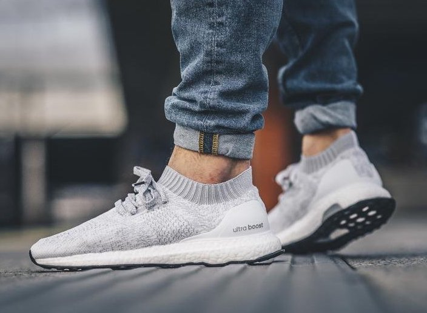
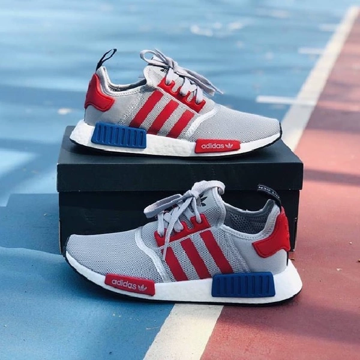
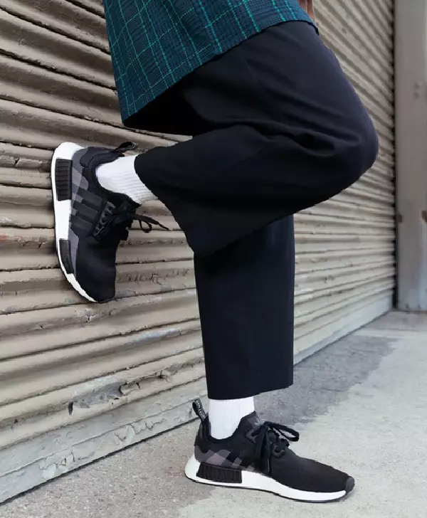
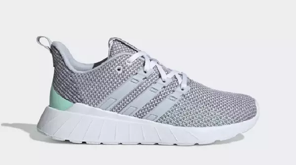
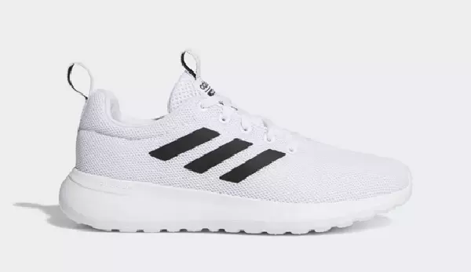
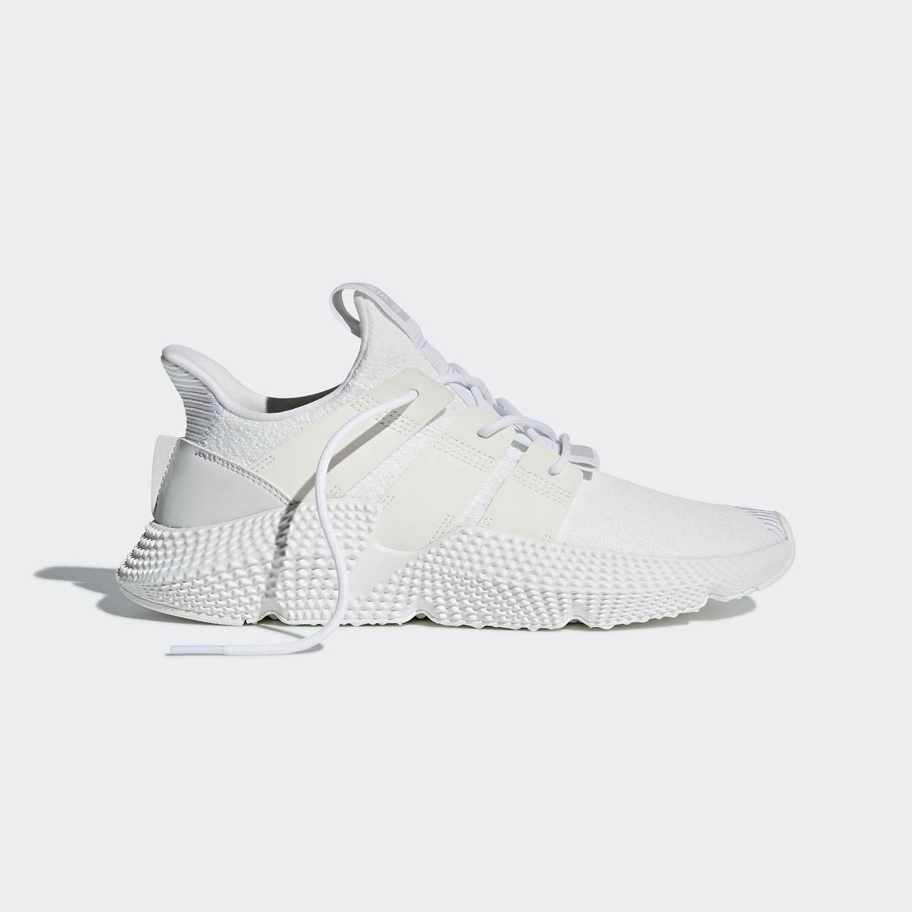
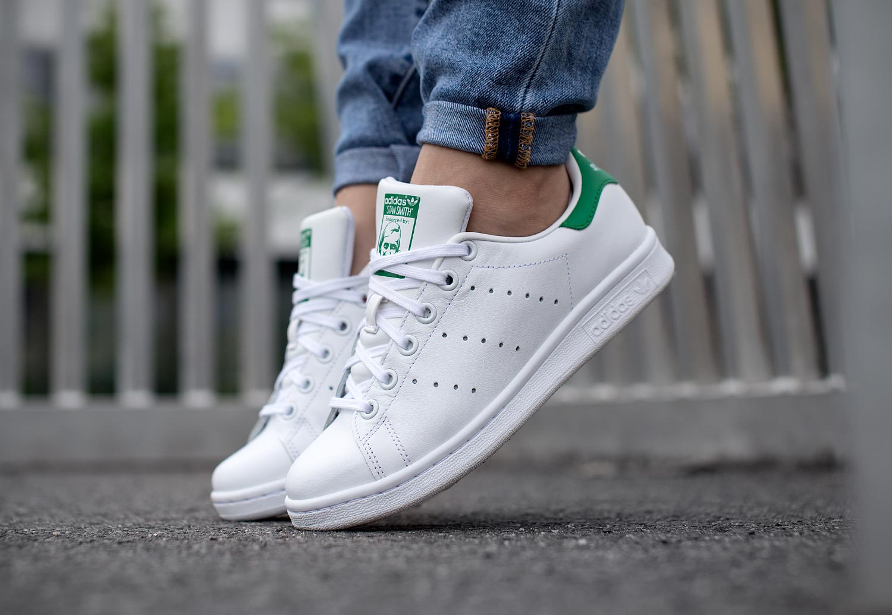

- Trang chủ
- Tin tức
Thông tin tổng hợp các mẫu giày chính hãng được ưa chuộng
Tương hiệu giày Adidas trong hơn 70 năm hình thành và phát triển đã tạo được ấn tượng đặc biệt cho các tín đồ thời trang, đặc biệt là những người yêu thích giày và đã có mặt ở hầu khắp các quốc gia trên Thế giới.
Dù là giày thể thao, giày chạy bộ hay giày sneaker thì Adidas cũng đều là một trong những thương hiệu dẫn đầu về cả độ bền lẫn thiết kế.
Các mẫu giày Adidas HOT nhất hiện nay
Dưới đây chúng ta sẽ cùng điểm qua những dòng giày Adidas chính hãng nổi bật, làm “điên đảo” người yêu thích giày.
Adidas Ultra Boost
Với thiết kế trẻ trung, năng động, thời thường và cực kỳ đẹp mắt, giày Adidas Ultra Boost ngay từ khi được ra mắt trên thị trường đã nhanh chóng trở thành một “hiện tượng” và nhận được nhiều đánh giá tích cực từ những người yêu giày. Suốt một khoảng thời gian dài và cho đến hiện tại, khi cần mua giày Adidas chính hãng, Ultra Boost vẫn là sự lựa chọn ưu tiên của nhiều người.
Các mẫu giày thể thao Adidas Ultra Boost chính hãng luôn tạo cảm giác thoải mái, dễ chịu, êm ái cho người dùng trong từng bước di chuyển với đế Boost được thiết kế theo công nghệ đặc biệt và được làm từ chất liệu vải Primeknit cao cấp giúp thoáng khí hiệu quả.
Dòng giày thể thao chính hãng Adidas Ultra Boost đã được nâng cấp qua nhiều phiên bản tạo nên sự đa dạng về mẫu mã thiết kế lẫn màu sắc.
Bạn có thể tham khảo một số mẫu giày Adidas chính hãng của dòng Ultra Boost được ưa chuộng nhiều trên thị trường hiện nay bên dưới:

Giày thể thao Adidas Ultra boost 19 B37703 chính hãng

Ultra boost Uncaged
Adidas Originals NMD
Đây không phải là dòng giày thể thao Adidas chính hãng hay dòng giày chạy bộ mà là dòng giày chuyên để dạo phố cho các “tín đồ thời trang”.
Được ra mắt từ năm 2015 nhưng đến nay khi cần mua giày Adidas chính hãng thì Adidas Originals NMD vẫn là sự lựa chọn ưu tiên của nhiều người vì sở hữu những ưu điểm nổi trội:
Có boost tăng cường ở đế giày.
Được sản xuất theo công nghệ Primeknit cho form dáng chuẩn nhất và giúp loại bỏ những bộ phận không
cần thiết trên giày để giảm trọng lượng cho đôi giày và tạo sự linh hoạt khi di chuyển.
Đường nét thiết kế tinh tế.
Phần đế giày có những lỗ bị cắt giúp phục hồi năng lượng nhanh nhất.

Adidas NMD_R1 F99714

Adidas NMD_R1 EE5082
Adidas Neo
Ưu điểm nổi bật của dòng giày Adidas Neo chính hãng là trọng lượng khá nhẹ, hỗ trợ hoạt động di chuyển linh hoạt hơn. Đồng thời, người mua giày Adidas chính hãng Neo cũng cho nhiều đánh giá tích cực vì dòng sản phẩm này được thiết kế ôm sát vào chân, có phần mũi giày cứng cáp và đặc biệt là giá thành chỉ bằng khoảng 1 nửa so với dòng giày Adidas Originals truyền thống.

Adidas Questar - Giày Adidas chính hãng phù hợp cho người dùng ở nhiều độ tuổi khác nhau

Adidas CF Adiracer
Adidas Prophere
Nếu là một “fan” của thương hiệu giày Adidas thì chắc hẳn bạn cũng đã từng “điên đảo” và tìm mọi cách để mua giày Adidas chính hãng Prophere rồi đúng không?
Các mẫu giày Adidas Prophere gây ấn tượng với giới trẻ yêu thích giày sneaker Adidas bởi thiết kế độc đáo, trẻ trung, cá tính và rất dễ phối đồ.
Đồng thời, dòng giày Adidas Prophere này cũng được sản xuất theo công nghệ tiên tiến nhất với chất liệu cao cấp nên cho độ bền tuyệt đối, mang lại
cảm giác vô cùng thoải mái khi di chuyển.

Adidas Stan Smith
Xuất thân là giày thể thao Adidas quần vợt chính hãng, các sản phẩm giày Adidas Stan Smith giúp cho hoạt động di chuyển được dễ dàng và thoải mái hơn, đáp ứng
được những tiêu chuẩn cần có của một đôi giày thể thao.
Tuy có thiết kế khá đơn giản nhưng từng chi tiết trên giày đều được
nhà sản xuất chú trọng cho độ hoàn hảo nhất. Song song đó, màu sắc của dòng giày Adidas chính
hãng Stan Smith cũng rất đa dạng, phù hợp cho cả nam và nữ theo nhiều phong cách khác nhau từ “bánh bèo” đến cá tính, giúp người mua giày Adidas
Stan Smith chính hãng có thể chọn được mẫu thích hợp.
Bạn có thể tham khảo một số mẫu giày Adidas Stan Smith dưới đây:

Giày Adidas chính hãng giá bao nhiêu?
Giá giày Adidas hiện nay rất đa dạng, dao động trong khoảng từ 1 triệu đến 10 triệu, (trừ những phiên bản đặc biệt hoặc giới hạn số lượng)
tùy từng mẫu cụ thể. Do đó, để biết chính xác giày Adidas chính hãng giá bao nhiêu, bạn nên liên hệ trực tiếp với nơi bán uy tín để được
báo giá chính xác nhất hoặc truy cập: //giaynhatchinhhang.vn/ để tham khảo giá.
Mỗi dòng giày chính hãng Adidas đều có những ưu điểm nổi trội nhất mang đến những trải nghiệm tuyệt vời khi di chuyển hoặc hoạt
động thể thao. So với những ưu điểm về thiết kế bắt mắt, thời thượng và độ bền cùng những công nghệ, chất liệu được sử dụng để tạo nên
những điểm đặc biệt thì giá giày thương hiệu Adidas không hề mắc và hoàn toàn xứng đáng để bạn bỏ tiền triệu ra để sở hữu.
Nếu hiện tại bạn đang muốn sở hữu cho mình một đôi giày chính hãng Adidas thì có thể liên hệ trực tiếp với Giày Nhật chính hãng theo thông tin sau:
Địa chỉ: Tầng 3, TTTM Mỹ Đình Plaza 2 Số 2 Nguyễn Hoàng, Nam Từ Liêm, Hà Nội
Hotline: 0977179889
Website: //giaynhatchinhhang.vn/